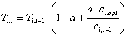
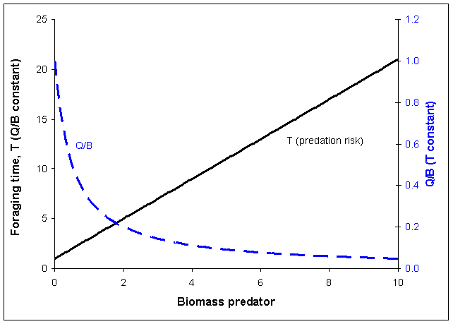

The food consumption prediction relationship in
Denoting the relative time spent foraging as Tit, measured such that the rate of effective search during any model time step can be predicted as ajit = Tit aji for each prey type j that i eats. Further, we assume that time spent vulnerable to predation, as measured by v’ij for all predators j on i, is inversely related to Tit, i.e., v’ijt = v’ij / Tit. An alternative structure that gives similar results is to leave the aij constant, while varying the vij by setting vijt = Tjt · vij in the numerator of
For convenience in estimating the aij and v’ij parameters, we scale Tit so that Ti0 = 1, and v’I j= vij. Using these scaling conventions, the key issue then becomes how to functionally relate Tit to food intake rate cit so as to represent the hypothesis that animals with lots of food available will simply spend less time foraging, rather than increase food intake rates.
In Ecosim a simple functional form for Tit is implemented that will result in near constant feeding rates, but changing time at risk to predation, in situations where rate of effective search aji is the main factor limiting food consumption rather than prey behavior as measured by vji. This is implemented in form of the relationship:

Eq. 65where, a is a user-defined Feeding time adjustment rate [0, 1] on the Ecosim Group info form; ci,opt is the (internally computed) feeding rate that optimizes feeding rate versus mortality risk for i; ci,t-1 is the consumption/biomass ratio in the previous time step for the group. The time spent feeding is constrained by a user-defined value (Maximum relative feeding time on the Group info form with default of two times the feeding rate in the Ecopath base model).
The relationship between foraging time, consumption and predator biomass is illustrated in Figure 3.4.

Figure 3.4. Relationship between relative foraging time (T), Q/B and predator biomass. If Q/B is held constant the foraging time (and hence predation risk) is a linear function of the predator biomass (solid line). If T is held constant the Q/B will decrease asymptotically with predator biomass (stippled line).